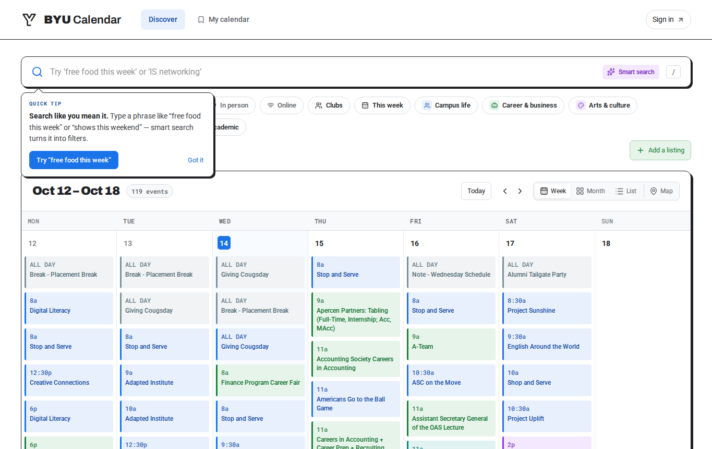
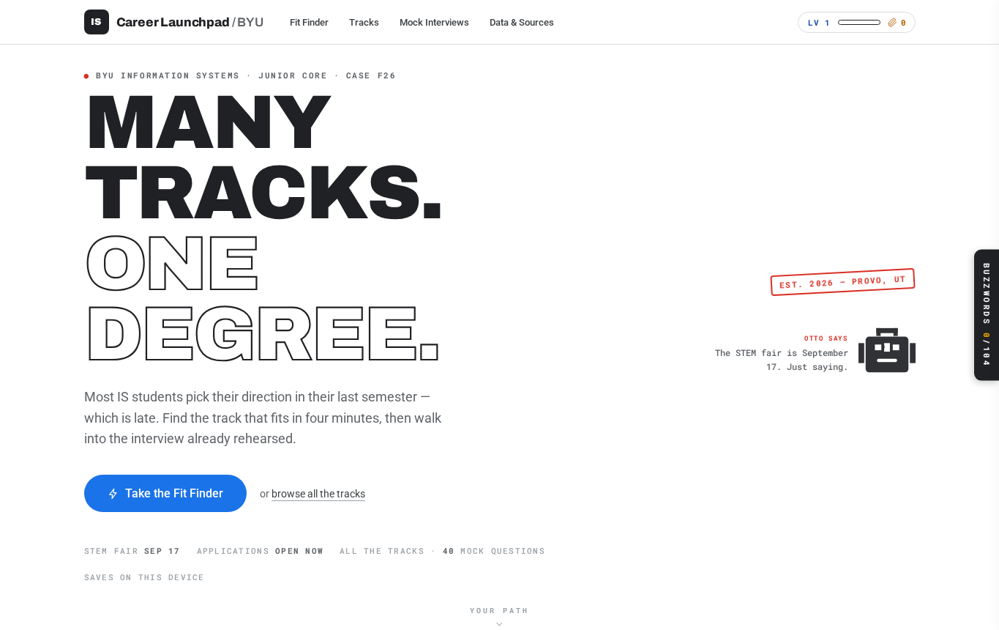

BYUCALENDAR.COMBYU Calendar
Our team wanted to make campus events easier to find. I helped with interviews, feature planning, and prototypes.
User researchDesignTeam project
BYU INFORMATION SYSTEMS STUDENT
Hey, I'm Austin! I'm studying Information Systems at BYU. I like trying new technology, working with a good team, and figuring out how to make everyday things easier.
01 / MY PROJECTS
Some of these started as class projects, others came from trying something new. Here's what I've worked on and what I learned along the way.

BYUCALENDAR.COMOur team wanted to make campus events easier to find. I helped with interviews, feature planning, and prototypes.

CAREER LAUNCHPADI helped brainstorm this career exploration site, use AI tools to build it, and work on some of its buttons.
I tried running an AI chatbot on my own computer using Ollama, Python, and FastAPI. I'm working on getting the original project running again.
I supervise 13 Tagalog teachers at the MTC and created Tagalog-Lahat-Lahat, an ongoing final-week language immersion initiative launched in January 2026.
02 / ABOUT ME
I'm an Information Systems student at BYU. I enjoy building websites and working with technology, but what I enjoy most is getting to know people and figuring things out together.
I also supervise Tagalog teachers at the Missionary Training Center. It's taught me a lot about listening, giving feedback, and helping a team improve. I try to bring that same mindset to class projects and anything else I build.
View my resume03 / SKILLS
These are some of the tools I've used in class, at work, and on personal projects.
Python · JavaScript · HTML/CSS · SQL · C# · Java
AWS · PostgreSQL · Git/GitHub · FastAPI · Ollama
User research · Wireframing · Prototyping · AI-assisted development
Team coaching · Communication · Stakeholder needs · Process improvement
04 / CONTACT
I'm looking for opportunities to learn, build, and work with great people. Feel free to reach out about a project or an opportunity.
LinkedIn, resume, email, and GitHub links are below.